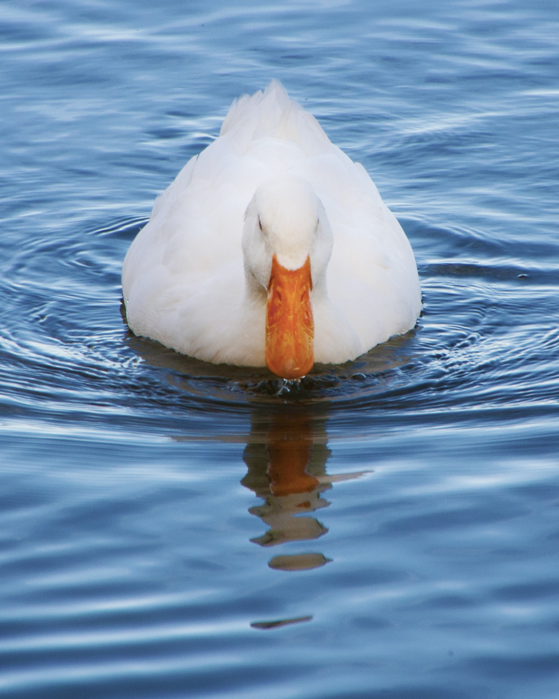

| id |
Species |
Scientific Name |
Habitat |
Family |
Conservation |
| 1 |
 Egyptian Goose Egyptian Goose |
Alopochen aegyptiaca |
Lakes and Ponds |
Anatidae |
Least Concern |
| 2 |
 Neotropic Cormorant Neotropic Cormorant |
Nannopterum brasilianum |
Lakes and Ponds |
Phalacrocoracidae |
Low Concern |
| 3 |
Mallard |
Anas platyrhynchos |
Lakes and Ponds |
Anatidae |
Low Concern |
| 4 |
 Muscovy Duck Muscovy Duck |
Cairina moschata |
Forests |
Anatidae |
Declining |